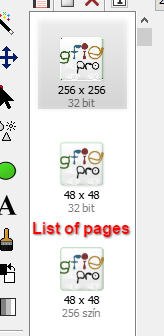
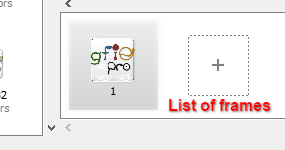
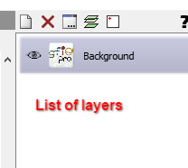

Basic concepts
Documents, pages, frames and layers
With Greenfish Icon Editor Pro, you can edit
- icons (for Windows and Mac), cursors, animations, photos or other images (together called graphic documents),
- as well as icon libraries, executable programs and DLLs containing icon/cursor/bitmap resources (together called library documents).
Graphic documents consist of one or more pages. Pages consist of frames. Each frame has zero or more layers.
Pages
Pages can represent different things depending on document type.
- In icons and cursors, pages are also called formats.
- They have different sizes and color depths, allowing the operating system to select the best image for various screen resolutions and icon sizes.
- In many cases, icon pages are just resized versions of the same high-resolution picture or vector graphic.
- However, a high-resolution image downsampled to 32x32 or even 16x16 may lose detail. Therefore these smaller icon formats are frequently customized to look a bit different.
- More on that in Windows icons and Windows cursors.
- In TIFF files, pages are true pages of a "real" document digitized from paper or intended for printing.
- Pages are displayed in a list box on the left of the editor, and can be hidden or shown with F5 (View | List of pages).

Frames
Each page can have one or more frames.
- Non-animated pages have only one frame.
- Animated pages have multiple frames.
- Each frame of a given page must have the same size.
- Frames of the current page are displayed in a list box below the editor, and can be hidden or shown with F6 (View | List of frames).
- Each frame has a duration that can be edited by double-clicking the frame thumbnail.
- Animated GIFs have one page with an arbitrary number of frames.
- Windows animated cursors (.ANI) have one or more pages, each with the same number of frames, describing the same animation in different sizes.
- GIF frames also have a disposal method that specifies what to do after the frame's duration has passed.
- GIF documents have a loop count property that specifies how many times the animation shall be played when being displayed on a website.

Layers
Each frame has zero or more layers that are stacked on top of each other to yield the image that will ultimately be displayed.
Layers are only preserved in Greenfish Icon Editor Pro's native format (.GFIE). In other file formats, only the resulting image will be saved.

← Index